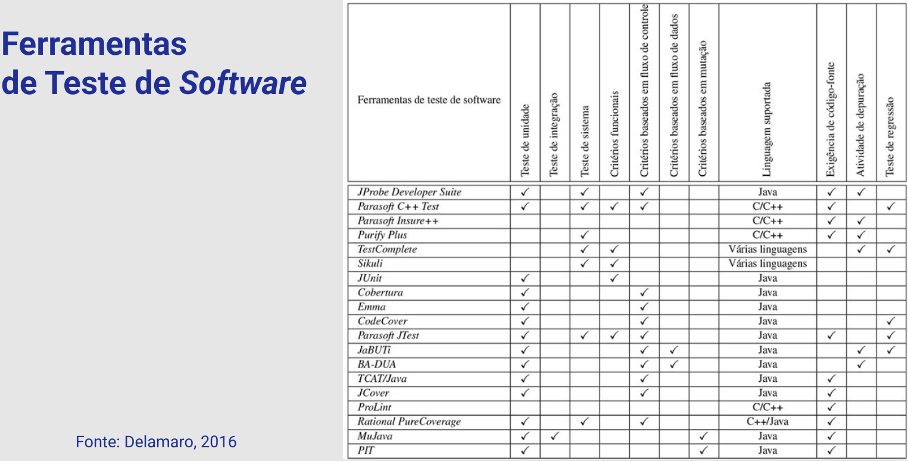
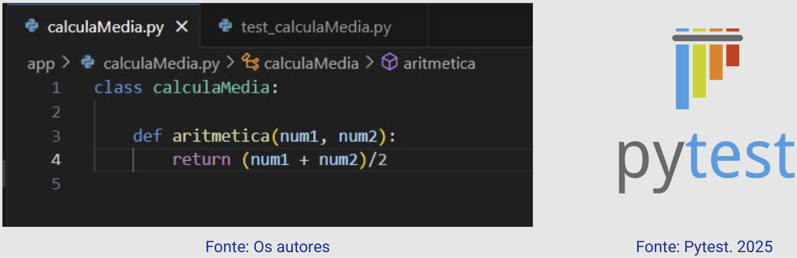
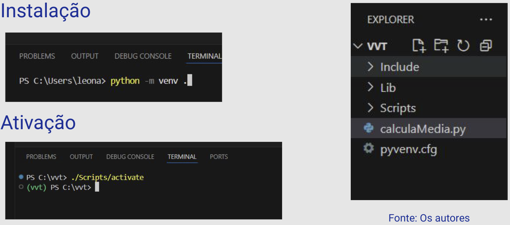
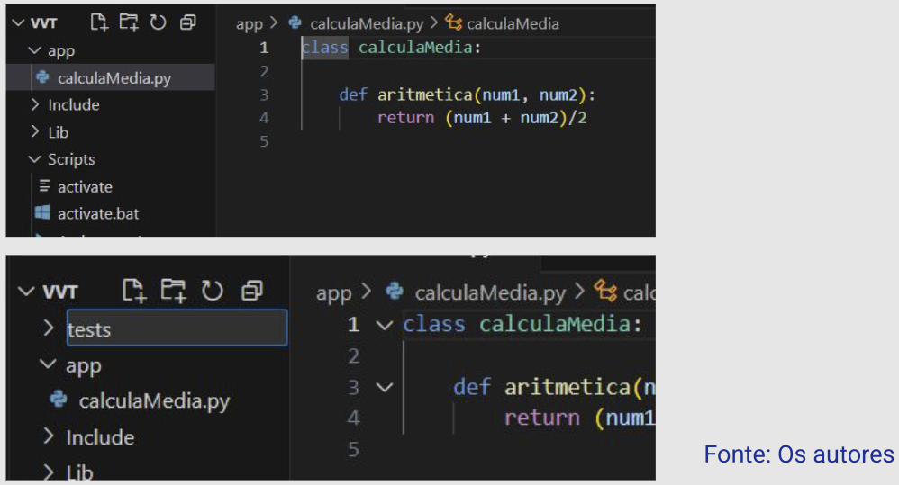
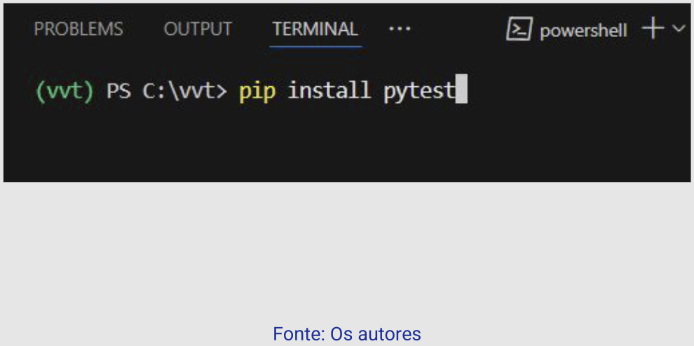
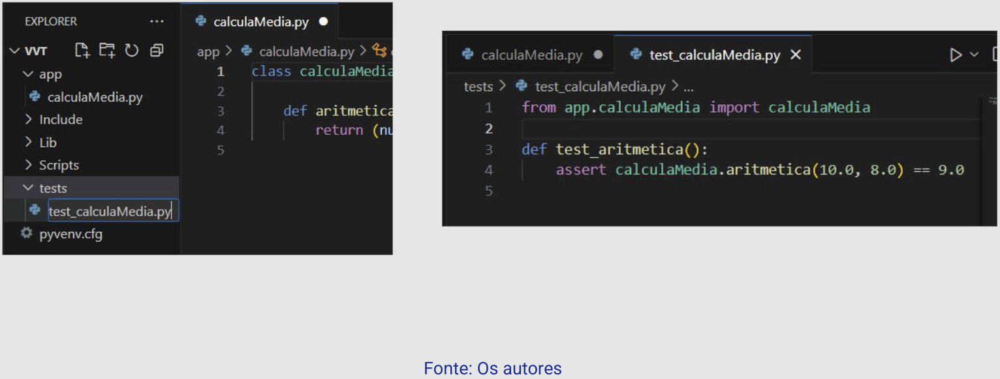
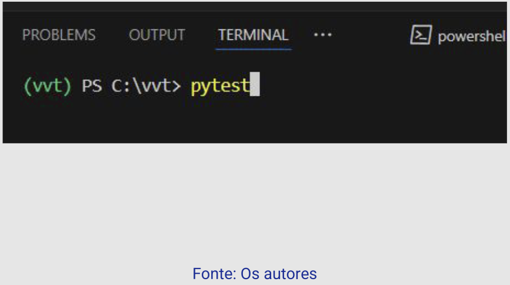
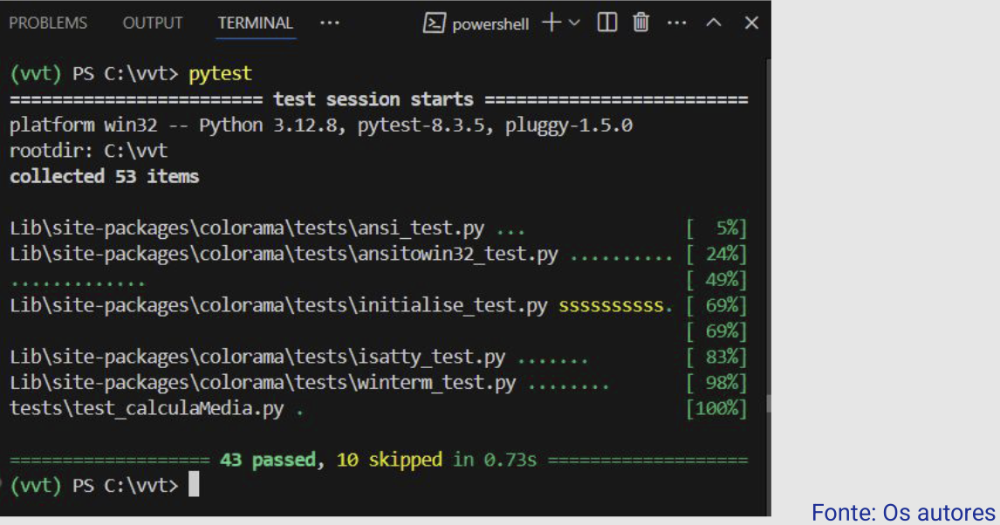
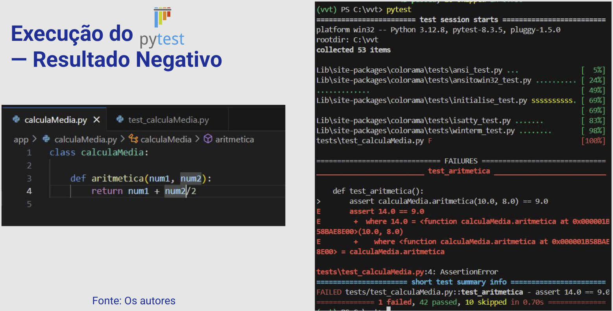
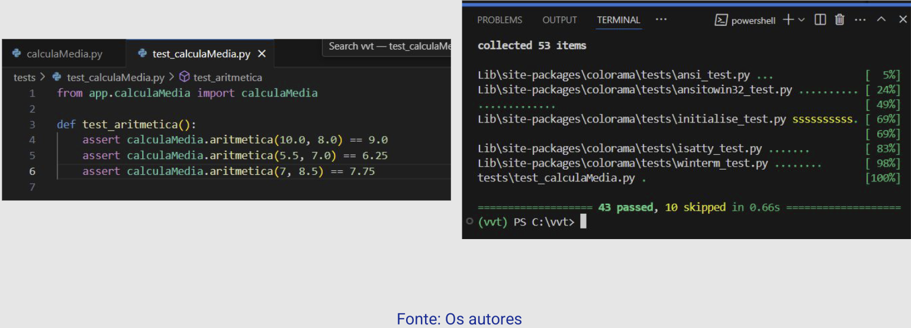

Disciplinas
VERIFICAÇÃO, VALIDAÇÃO E TESTE DE SOFTWARE. Concluído
Materiais
[UFMS Digital] Verificação, Validação e Teste de Software - Módulo 4 - Unidade 2
Prof° ministrante: Leonardo Souza Silva.
Neste ponto da disciplina...
- Entendemos o que é Qualidade de Software;
- Compreendemos como as atividades de Verificação, Validação e Teste de Software podem apoiar o processo de desenvolvimento e manutenção.
- Objetivo é construir um software com qualidade.
Ferramentas e Automação de Teste.
- O processo de Teste de Software pode ser apoiado pelo uso de ferramentas:
- Apoio ao Testador na execução do plano de testes;
- Implementação de alguns tipos de teste e critérios;
- Suporte a diferentes linguagens, e
- Automação do processo de teste.
Ferramentas de Teste de Software.

...
JUnit- Framework de teste popular, permite documentar e executar casos de teste de forma automática;
- Relata quais casos de teste não se comportaram conforme a especificação;
- Não é possível acompanhar a cobertura do código pelos casos de teste;
- Pode ser usado mesmo se o bytecode e a especificação do programa estejam disponíveis.
JaBUTi (Java Bytecode Understanding and Testing)
- Apoia a aplicação de critérios de teste estruturais;
- Não necessita do código-fonte → bytecode;
- Pode ser com qualquer linguagem que gere um código objetivo compatível com a especificação da JVM.
E na prática?
calculaMedia.py (Módulo 1 - Unidade 2)Para demonstrar o funcionamento de uma ferramenta, vamos usar o programa calculaMedia.py e a ferramenta Pytest.

...
Ambiente de trabalho que permite escrever, de maneira muito fácil, testes para aplicações e bibliotecas em linguagem Python.
- Permite a execução de teste de unidade (Python).
- Mais informações: https://docs.pytest.org/en/stable/
- Configuração do ambiente;
- Instalação do Pytest;
- Construção do programa de teste com os casos de teste.
- Execução do teste.
A descrição detalhada dos passos seguidos para realização deste teste pode ser encontrada neste tutorial.
Configuração do Ambiente
...
Criar os diretórios app e tests

...
Instalação

...
Criação dos Casos de Teste

...
Execução

...

...

...

...
Ex.: calculaMedia.py
- Objetivo de dar um primeiro contato com esse tipo de ferramenta;
- Outras ferramentas surgindo e em uso pelos desenvolvedores de software;
- Cobertura de Código:
- Coverage, Codecov, dentre outras.
- Integração com repositórios, por exemplo, GitHub.
Para finalizar...
- Entendemos o uso de ferramentas e da automação na atividade de teste de software.
- Compreendemos sua importância para o processo de teste e manutenção de software.